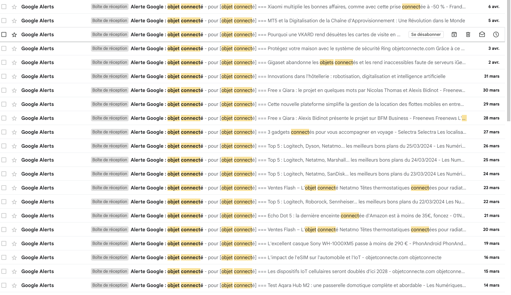

Nom: LAZAAR Sami
Profile: Développeur
Email: samie17030@gmail.com
Phone: 07.66.20.08.73
Compétence
HTML 85%Sur Moi
Sortant d'un bac technologique en STMG option (SIG) Système d’Informations et de Gestion, j'ai continué mon parcours en intégrant un BTS SIO option SLAM au CFA INSTA. Au cours de mes études, j'ai eu la chance de travailler en stage chez Mutative, où j'ai pu acquérir de l'expérience. Cette expérience m'a permis de développer mes compétences en développement web avec les technologies HTML, CSS et PHP, ainsi que de renforcer mes compétences en développement grâce à des formations en ligne sur OpenClassRooms.
Je suis actuellement à la recherche d'une opportunité pour poursuivre mon développement professionnel en tant que développeur web. Je suis passionné par la technologie et j'aime relever de nouveaux défis, ce qui me pousse à continuer à apprendre de nouvelles compétences. Je souhaite continuer mon aventure informatique en suivant un BAC+3 en développeur full stack et en poursuivant ensuite un master en lead full stack.
Je suis une personne déterminée, autonome et capable de travailler en équipe. Je suis également très organisé et j'aime travailler sur des projets avec une approche méthodique.
Services
Les services que je propose
Développeur Web
Création d'interfaces internet pour des clients, comme : des sites internet variés (e-vitrine, e-commerce, plateforme d’échanges, etc.);
MySQL
Création d'une base de données MySQL dans le respect des besoins du client
Travailler avec Git
Capable d'utiliser l'outil git
Stages
J'ai effectué un stage chez la société Mutative, une entreprise spécialisée dans la blockchain. La blockchain est une technologie de registre distribué qui permet de stocker et de transférer des informations de manière sécurisée, transparentes et décentralisées. Chaque transaction est enregistrée dans un "bloc" et ces blocs sont reliés entre eux pour former une "chaîne". Cette structure rend les données pratiquement inviolables et permet une vérification indépendante des transactions sans besoin d'un tiers de confiance.
L'objectif de l'entreprise Mutative est de migrer, à travers le code, les finances des entreprises qui sollicitent ses services vers la finance décentralisée. Concrètement, cela signifie aider ces entreprises à passer de la finance traditionnelle, où les transactions passent par des intermédiaires comme les banques, à la finance décentralisée, qui repose sur la blockchain. En utilisant la finance décentralisée, les entreprises peuvent bénéficier de transactions plus rapides, plus sécurisées et moins coûteuses.
Durant mon stage, j'ai apporté plusieurs contributions significatives à la société. J'ai notamment créé un site web de contact en utilisant un outil de conception et de développement appelé Framer, disponible sur framer.com. Ce site permet aux clients et partenaires potentiels de Mutative de facilement entrer en contact avec l'entreprise. De plus, j'ai réalisé des tests sur des outils de conversion en Python pour convertir du code Java en smart contracts. Les smart contracts sont des contrats intelligents qui s'exécutent automatiquement lorsque certaines conditions sont remplies, jouant un rôle clé dans la finance décentralisée en permettant des transactions automatiques et sécurisées sans intermédiaires.
Cette expérience m'a offert une meilleure compréhension des mécanismes de la finance décentralisée et de la technologie blockchain, tout en me préparant à intégrer et à collaborer avec des entreprises évoluant dans cet écosystème innovant.
Projets/Tableau de Synthèse
Les projets finis ou en cours.
{kind=link}

LunetteSITE
Dans le cadre de ma première année d'études en développement web, j'ai été chargé de réaliser un projet PHP. Le projet consiste à créer un site vitrine pour une boutique de lunettes. Ce projet a pour objectif de mettre en pratique les compétences acquises en PHP et en développement web au cours de l'année.
Détails
{kind=link}
Bibliotheque
Dans le cadre de ma deuxième année d'études en développement web, j'ai été chargé de réaliser un projet en programmation orientée objet. Le projet consistait à créer une application en Java pour la gestion d'une bibliothèque de livres. Ce projet avait pour objectif de mettre en pratique les compétences acquises en programmation orientée objet et en développement d'applications tout au long de l'année.
Détails
Les projets supplémentaires sont disponibles sur mon github Github
VEILLE Technologique
Qu’est – ce qu’une veille technologique ?
La veille technologique consiste à s’informer de façon systématique sur les techniques les
plus récentes et surtout sur leur mise à disposition commerciale.
Qu’est – ce qu’un objet connecté ?
Un objet connecté est un objet qui a la capacité de se connecter à un réseau de communication (Internet des Objets (IDO) via Wi-Fi, Bluetooth, réseau internet mobile notamment 5G…) et peut, selon les cas, recevoir, stocker, traiter et transmettre des données, recevoir et donner des instructions pour fonctionner.Pourquoi j’ai choisis les objets connecté :
J’ai choisi ce sujet car il représente le présent et le futur de ce monde, et qu’il est important de se tenir informé à ce sujet.
Avantages :
Les avantages des objets connectés sont simples.
Améliorer le confort des personnes (par exemple mettre en marche le four à distance).
Gain énergétique (Meilleur gestion du chauffage).
Aide au personne handicapée.
Sécurité (Alarme ,vidéosurveillance).
Inconvénients :
Malheureusement les objets connectés comprend des inconvénients.
Certaines personnes n’ont pas accés aux maisons connectées à cause de leur faible
connexion internet.
Le piratage, le système des objets connectées ne sont pas infaillibles
Comment je me tiens informé ?
Pour rester à jour sur les dernières nouveautés et tendances en matière d'objets connectés, j'utilise quatre outils essentiels : Google Alertes, X, Reddit et Feedly.
Google Alertes est un service gratuit de Google qui permet de recevoir des notifications par e-mail dès que de nouveaux contenus correspondant à mes intérêts sont publiés sur le web.
Pour configurer Google Alertes, il suffit de se rendre sur le site Google Alertes, d'entrer les mots-clés pertinents (par exemple, "objets connectés", "Internet des objets", "IoT"), et de définir la fréquence des alertes (quotidiennes, hebdomadaires, etc.). Grâce à ce service, je reçois directement dans ma boîte de réception les articles, blogs, études et autres contenus relatifs aux objets connectés, ce qui me permet de rester informé des dernières innovations et des nouvelles tendances technologiques.
En parallèle, j'utilise X pour suivre les experts dans ce domaine . En suivant des comptes influents dans le domaine de l'Internet des objets, je bénéficie d'un flux continu d'informations en temps réel. De plus, en utilisant des hashtags comme #IoT, je peux facilement trouver et suivre les discussions et les actualités les plus récentes. Twitter me permet également d'interagir directement avec les experts, de poser des questions et de participer à des conversations enrichissantes.
Un troisième outil que j'utilise est Reddit, une plateforme de discussion où les utilisateurs peuvent publier des contenus, poser des questions et participer à des débats dans des communautés appelées "subreddits". Des subreddits comme r/IoT, r/smartdevices et r/connecteddevices sont dédiés aux objets connectés et à l'Internet des objets. Ces communautés permettent de découvrir des nouvelles, des projets innovants, des avis d'experts et des discussions approfondies sur les tendances et les défis actuels. Reddit offre une perspective plus communautaire et souvent plus technique sur les sujets, avec des échanges d'expériences personnelles et des conseils pratiques.
Enfin, le dernier outil que j'utilise pour suivre l'actualité des objets connectés est le flux RSS via Feedly. Feedly me permet de centraliser et d'organiser les dernières nouvelles et mises à jour de diverses sources spécialisées en un seul endroit. Grâce à cette plateforme, je reste informé des tendances et des avancées technologiques dans le domaine des objets connectés sans avoir à consulter chaque site individuellement.
Google Alerte
